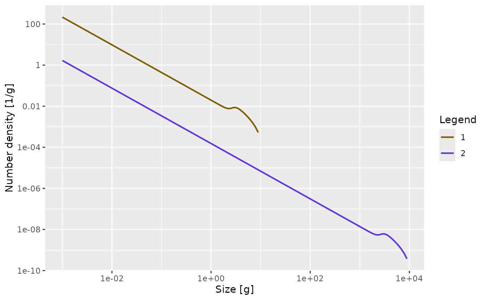

On this page we present the details of the mizer model, taking care
to separate the essential features of the model that are hard-coded and
the various possible specialisations for which mizer provides setup
functions. We will provide links to the functions that can be used to
set or change the various model parameters (all collected together in
setParams()) as well as to the functions that calculate the
various ecological rates in the model (all collected together in
mizerRates()) because the help pages of these functions
will provide useful additional details.
Size spectrum dynamics
Consumer densities
The model assumes that, to a first approximation, an individual can be characterized by its weight and its species number only. The aim of the model is to calculate the size spectrum , which is the density of individuals of species such that is the number of individuals of species in the size interval . In other words: the number of individuals in a size range is the area under the number density .
Here is a plot of an example size spectrum for two species with on the vertical axis for and on the horizontal axis.
library(mizer)
params <- newTraitParams(no_sp = 2, min_w = 1e-3)
plotSpectra(params, resource = FALSE, power = 0)
To represent this continuous size spectrum in the computer, the size
variable
is discretized into a vector w of discrete weights,
providing a grid of sizes spanning the range from the smallest egg size
to the largest maximum size. These grid values divide the full size
range into a finite number of size bins. The size bins should be chosen
small enough to avoid the discretisation errors from becoming too big.
You can fetch this vector with w() and the vector of bin
sizes with dw().
The weight grid is set up to be logarithmically spaced, so that
w[j]=w[1]*10^(j*dx) for some fixed dx. This
means that the bin widths increase with size:
dw[j] = w[j+1] - w[j] = w[j] * (10^dx - 1). This grid is
set up automatically when creating a MizerParams object.
In the code the size spectrum is stored as an array N
such that N[i, a] holds the density
at weights
w[a],
or, if time dependence is included, an array such that
N[i, a, u] holds
.
See N().
Note that, contrary to what one might have expected,
N[i, a] is not the number of individuals in a size
bin but the density at a grid point. The number of individuals
in the size bin between w[a] and
w[a+1]=w[a]+dw[a] is only approximately given as
N[i, a]*dw[a], where dw[a]= w[a+1]-w[a].
Of course all these calculations with discrete sizes and size bins
are only giving approximations to the continuous values, and these
approximations get better the smaller the size bins are, i.e., the more
size bins are used. This is why the functions setting up MizerParams
objects allow you to choose the number of size bins
no_w.
Traffic on the road to adulthood
A good way to think about the time evolution of the number density is to consider the familiar situation of traffic density on the roads. A fish’s life is a journey along the size axis from egg size to size at death. There are many other fish making the same journey. The speed with which the fish move along the size axis is their growth rate. This is quite analogous to the speed of traffic on a road. Just as the speed of cars depends on the density of other cars on the road, the growth rate of fish depends on the density of other fish. When the density of cars on a stretch of road is high, their speed decreases, and this leads to a pile-up and can lead to traffic jams. Similarly when the density of fish in a size interval is high, their growth rate goes down due to competition for the same food sources, and this too can lead to pile-ups and bottlenecks. So one just has to replace the space variable in a traffic model by size to get an equation for the fish size spectra.
The additional feature in the evolution of fish densities that is not present in road traffic density is that fish can die while they are growing up, and this death rate is also dependent on the density of other fish.
The time evolution of the number density is described by the McKendrick-von Foerster equation, which is a transport equation (as one would use for traffic density) but with an additional loss term due to fish mortality:
where individual growth is described below in the Growth section and mortality is described in the Mortality section.
There is no need for you to understand the mathematical notation used in this equation to understand its origin: it just says that the rate at which the number of fish in a size bracket changes is the rate at which fish grow into the size bracket from a smaller size minus the rate at which fish grow out of it to a larger size minus the rate at which the fish in the size bracket die. So to simulate the size spectrum dynamics we need to specify the growth rates and the mortality rates. This we will do below. The important point is that these rates depend on the density of other fish of other sizes, making the size-spectrum dynamics non-linear and non-local in very interesting ways. The resulting effects are too complicated to disentangle by pure thought. This is where simulations with the mizer package come in.
This McKendrick-von Foerster equation is approximated in mizer by a
finite-difference method. This allows the project()
function in mizer to project the size spectrum forwards in time: Given
the spectrum at one time the project() function calculates
it at a set of later times.
Of course there also needs to be reproduction into the smallest size class, otherwise there would be no small fish any more after a while. So for the smallest size class instead of a rate of growth into the size class there is a rate of reproduction of new individuals into that size class. This reproduction will be described below in the Reproduction section.
Resource density
Besides the fish spectrum there is also a resource spectrum , representing for example the phytoplankton. This spectrum starts at a smaller size than the fish spectrum, in order to provide food also for the smallest individuals (larvae) of the fish spectrum. By default the time evolution of the resource spectrum is described by a semi-chemostat equation.
The semichemostat dynamics are given by
Here
is the resource regeneration rate and
is the carrying capacity in the absence of predation. These parameters
are changed with setResource(). By default mizer assumes
allometric forms
You can retrieve these with getResourceRate() and
getResourceCapacity() respectively. It is also possible to
implement other resource dynamics, as described in the help page for
setResource(). The mortality
is due to predation by consumers and is described in the subsection Resource mortality.
Because the resource spectrum spans a larger range of sizes these sizes Because the resource spectrum spans a larger range of sizes these sizes Because the resource spectrum spans a larger range of sizes these sizes are discretized into a different vector of weights
The resource spectrum is then represented by a vector
NResource such that NResource[c]
=w_full[c].
Growth
Consumers can grow only by consuming prey. In the next few subsections we will build towards determining the growth rate resulting from predation. We will discuss how we model the predator-prey encounter rate, the resulting rate of consumption, the rate of metabolic losses, and the partitioning of the remaining energy into reproduction and growth.
Predator-prey encounter rate
The rate at which a predator of species
and weight
encounters food (mass per time) is determined by summing over all prey
species and the resource spectrum and integrating over all prey sizes
,
weighted by the selectivity factors:
This is calculated by
getEncounter(). The overall prefactor
sets the predation power of the predator. It could be interpreted as a
search volume. It is set by setSearchVolume(). By default
it is assumed to scale allometrically as
The
matrix sets the interaction strength between predators and the various
prey species and resource. It is changed with
setInteraction().
The size selectivity is encoded in the predation kernel
.
This is changed with setPredKernel().
An important simplification occurs when the predation kernel depends on the size of the prey only through the predator/prey size ratio , This is assumed by default but can be overruled. The default for the predation kernel is the truncated log-normal function where is the preferred predator-prey mass ratio and sets the width of the predation kernel.
The integral in the expression for the encounter rate is approximated by a Riemann sum over all weight brackets: $$ {\tt encounter}[i,a] = {\tt search\_vol}[i,a]\sum_{k} \left( n_{R}[k] + \sum_{j} \theta[i,j] n[j,k] \right) \phi_i\left(w[a],w[k]\right) w[k]\, dw[k]. $$ In the case of a predation kernel that depends on only, this becomes a convolution sum and can be evaluated efficiently via fast Fourier transform.
Consumption
The encountered food is consumed subject to a standard Holling functional response type II to represent satiation. This determines the feeding level , which is a dimensionless number between 0 (no food) and 1 (fully satiated) so that is the proportion of the encountered food that is consumed. The feeding level is given by
where
is the maximum consumption rate. This is changed with
setMaxIntakeRate(). By default mizer assumes an allometric
form
The feeding level is calculated with the function
getFeedingLevel().
The rate at which food is consumed is then
Metabolic losses
Some of the consumed food is used to fuel the needs for metabolism
and activity and movement, at a rate ${\tt
metab}_i(w)$. By default this is made up out of standard
metabolism, scaling with exponent
,
and loss due to activity and movement, scaling with exponent
:
$${\tt metab}_i(w) = k_{s.i}\,w^p +
k_i\,w.$$ See the help page for
setMetabolicRate().
The remaining rate, if any, is assimilated with an efficiency
and is then available for growth and reproduction. So the rate at which
energy becomes available for growth and reproduction is $$\begin{equation}
\label{eq:Er}
E_{r.i}(w) = \max(0, \alpha_i f_i(w)\, h_i(w) - {\tt metab}_i(w))
\end{equation}$$ This is calculated with the
getEReproAndGrowth() function.
Investment into reproduction
A proportion
of the energy available for growth and reproduction is used for
reproduction. This proportion should change from zero below the weight
of maturation to one at the maximum weight
,
where all available energy is used for reproduction. This function is
changed with setReproduction(). Mizer provides a default
form for the function which you can however overrule.
Growth
What is left over after metabolism and reproduction is taken into
account is invested in somatic growth. Thus the growth rate is
It is calculated by the
getEGrowth() function.
When food supply does not cover the requirements of metabolism and activity, growth and reproduction stops, i.e. there is no negative growth. The individual should then be subjected to a starvation mortality, but starvation mortality is not implemented in core mizer but is provided by the mizerStarvation extension package.
Mortality
The mortality rate of an individual has three sources: predation mortality , background mortality and fishing mortality .
Predation mortality is calculated such that all that is eaten
translates into corresponding predation mortalities on the ingested prey
individuals. Recalling that
is the proportion of the food encountered by a predator of species
and weight
that is actually consumed, the rate at which all predators of species
consume prey of size
is $$\begin{equation}
\label{eq:pred_rated}
{\tt pred\_rate}_j(w_p) = \int \phi_j(w,w_p) (1-f_j(w))
\gamma_j(w) N_j(w) \, dw.
\end{equation}$$ This predation rate is calculated by the
function getPredRate().
The integral is approximated by a Riemann sum over all fish weight brackets. $$ {\tt pred\_rate}[j,c] = \sum_{a} {\tt pred_kernel}[j,a,c]\,(1-{\tt feeding_level}[j,a])\, \gamma[j,a]\,n[j,a]\,dw[a]. $$
The mortality rate due to predation is then obtained as $$\begin{equation}
\label{eq:mup}
\mu_{p.i}(w_p) = \sum_j {\tt pred\_rate}_j(w_p)\, \theta_{ji}.
\end{equation}$$ This predation mortality rate is calculated by
the function getPredMort().
External mortality
is independent of the abundances and is changed with
setExtMort(). By default mizer assumes that the external
mortality for each species is a constant
independent of size. The value of
is either specified as a species parameter or it is assumed to depend
allometrically on the maximum size:
Fishing mortality
The fishing parameters for the model are set up with
setFishing(), where you can find the details of how to set
up gears with different selectivities and the capabilities of different
species. Fishing mortality
is calculated with the function getFMort().
Total mortality
The total mortality rate
is calculated with the function getMort().
Resource Mortality
The predation mortality rate on resource is given by a similar
expression as the predation mortality on fish: $$\begin{equation}
\label{eq:mupp}
\mu_{p}(w_p) = \sum_j {\tt pred\_rate}_j(w_p)\, \theta_{jp}.
\end{equation}$$ This is the only mortality on resource currently
implemented in mizer. It is calculated with the function
getResourceMort().
Reproduction
Energy invested into reproduction
The total rate of investment into reproduction (grams/year) is found
by integrating the contribution from all individuals of species
,
each of which invests a proportion
of their consumption. This total rate of energy investment can then be
converted to a total rate of egg production
(numbers per year):
Here the total rate of
investment is multiplied by an efficiency factor
and then dividing by the egg weight
to convert the energy into number of eggs. The result is multiplied by a
factor
to take into account that only females reproduce. This rate of potential
egg production is calculated with getRDI().
Density-dependence in reproduction
Three important density-dependent mechanisms widely assumed in fisheries models are automatically captured in the mizer model that lead to an emergent stock-recruitment relationship:
- High density of spawners leads to a reduced food income of the spawners and consequently reduced per-capita reproduction.
- High density of larvae leads to slower growth of larvae due to food competition, exposing the larvae to high mortality for a longer time, thereby decreasing the survivorship to recruitment size.
- High density of fish leads to more predation on eggs and fish larvae by other fish species or by cannibalism.
However there are other sources of density dependence that are not explicitly modelled mechanistically in mizer. An example would be a limited carrying capacity of suitable spawning grounds and other spatial effects.
This requires additional phenomenological density dependent contributions to the stock-recruitment. In mizer this type of density dependence is modelled through constraints on egg production and survival. The default functional form of this density dependence is represented by a reproduction rate (numbers per time) that approaches a maximum as the energy invested in reproduction increases, modelled mathematically it is analogous to a Beverton-Holt type function:
where
is the maximum reproduction rate of each trait class. This final rate of
reproduction is calculated with getRDD().
This default Beverton-Holt type is implemented by
BervertonHoldRDD() but mizer also provides alternatives
RickerRDD(), SheperdRDD(),
constantRDD() and noRDD(). Also, users are
able to write their own functions, e.g. hockey-stick. See
setReproduction() for details.